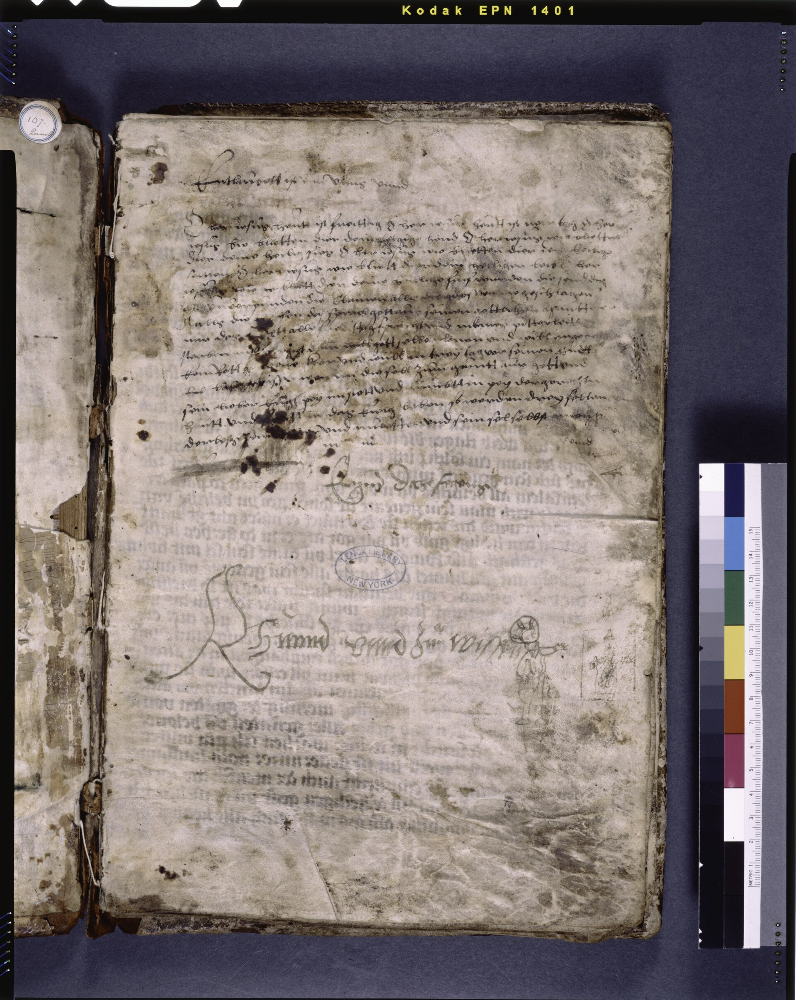
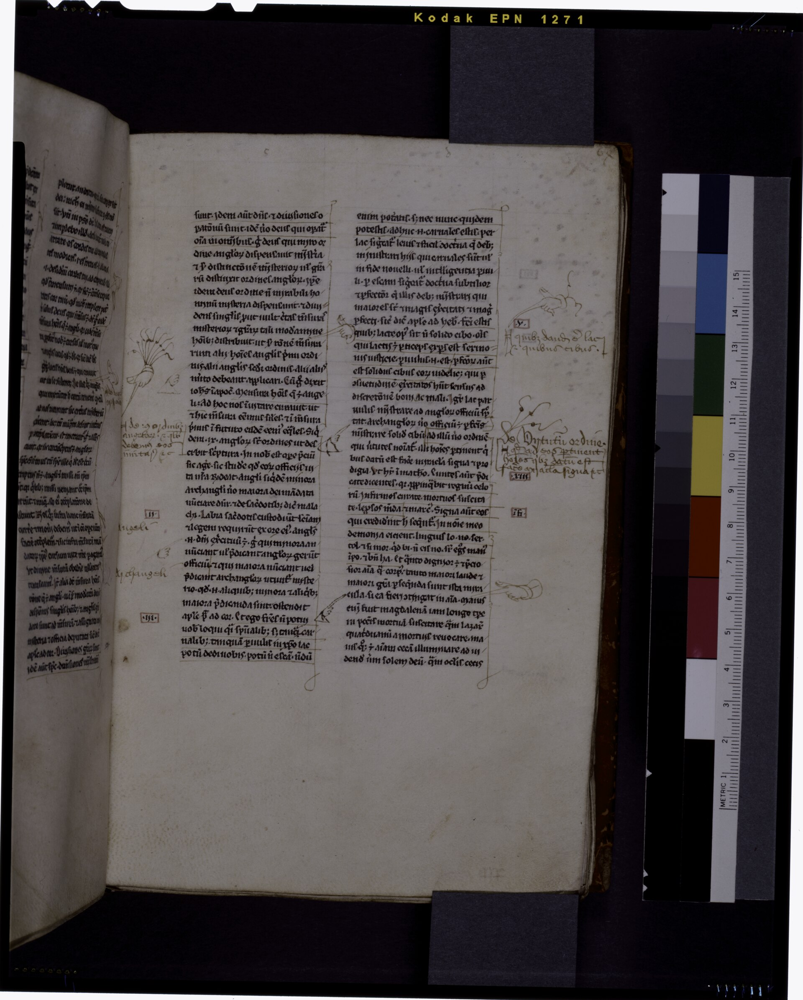
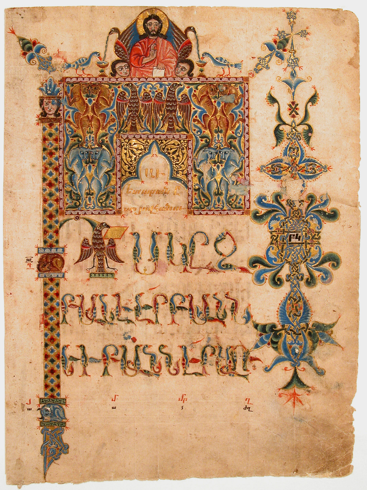
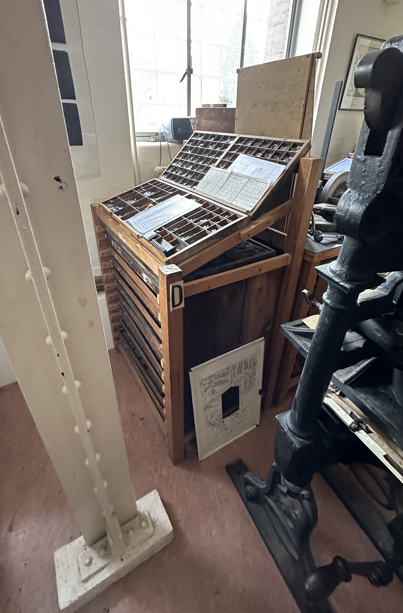

把重要的情节，
读得更深。
放一本中文网文 TXT 或 EPUB 进去。它逐段读完，把情节压深、把注水退浅，深度由你调。原文一个字不改。
它不改写一个字，只做一件事：给每一段落定一个深浅。下面是一小段示例正文，点顶栏三种强度，看同一段字怎么重排。判定不合口味的段落，可以一键保留原文。
留给情节的深度
留给注水的深度
她把信纸从书脊里抽出来的时候，手是抖的。三年了，她第一次敢把它打开。
情节窗外雨声很密，屋檐下的水线连成一片，落在青石板上溅起细碎的白点。
普通屋里的家具都是旧的，桌子有一角磨得发白，椅背上搭着一条洗到发灰的毯子。
偏水雨下了三天，天是灰的，路也是灰的。她这几天没怎么出门，也没怎么说话。
注水信上只有一行字：只剩一个名字还是清楚的。她把这行字读了三遍，然后把书塞回原来的位置。
情节（本章完，求月票。作者的话：明天两更，谢谢打赏的读者。）
零信息夜色慢慢沉下来，像墨水滴进清水里，一点一点把屋子染黑。
注水她想起很多年前的事。那时候她还没有这本书，也没有这封信，很多事都还没有发生。
偏水
先拆章，再把整本书过一遍体检。
然后逐段判读，给每一段定一个深浅。
最后你挑一档强度，把它带走。
信上只有一行字，她把书塞回原位。雨下了三天，天是灰的，路也是灰的。
手头一本 TXT，或者一个 EPUB，直接放进去就能读：自动分好章节，字号随手调，整本书就在这一页里。不上传，不加工，不改一个字。

处理
TXT 和 EPUB 都直接读。PDF 要先抽出文本，这层还没做。
EPUB 交给你的阅读器；网页版双击就能看。
情节 / 普通 / 偏水 / 注水 / 零信息，每一段都写明判定依据。
它只决定深浅，不增删、不润色、不换词。
顺手的
原汁原味 / 平衡 / 只看剧情。不用重跑，调完就出。
鼠标停在段落上，能看到它为什么被这么判；不顺眼的段落一键保留原文。
规则拿不准的段落（大概三成到七成）必须叫你的模型复核一遍，Key 用完即走，不落盘。
不做的
校对、润色、分段都不做。你交出什么文，拿回什么文。
全程在你自己的机器上跑，我们不收你的小说。
默认平衡，恋战的题材自己调。判定权始终在你手里。

能。TXT 和 EPUB 都直接读进来。PDF 要先抽成文本再处理，这一层还没做。
不会。它只给每一段落定一个深浅，渲染时改的是字的重和浓，句子本身一个都不动。你拿回的文件，正文和原文逐字一致。
它按一套写死的规则判，不是凭感觉猜：零信息的求票、作者话、水印直接判死；写景、复述、对话这类由你决定要不要退浅；情节永远保护。每段都标着判定依据，鼠标停上去就能看到，不服的段落一键保留原文。
关不掉，它是必经的一层。规则拿不准的那一段（大概三成到七成的模糊带）一定要叫你的模型复核一遍，结果按原来的格式写回去。接口没配好就不出书，也不会静默退回纯规则。
填你自己的。用哪家由你决定。出书必须过 AI 复核这一层，接口地址、模型名、Key 三样配齐才能开工；Key 只在这次请求里用，不写进文件、不存下来。
拆章、判读、打包都在你自己的机器上做完，我们不收你的书，也不看里面写了什么。只有那几段拿不准的文字会发给你自己选的模型服务商，其余一步不落地留在本机。

本地服务还没起。双击项目里的「启动.bat」，或者运行 python app/server.py，再从 http://127.0.0.1:8765 打开这个页面就行。